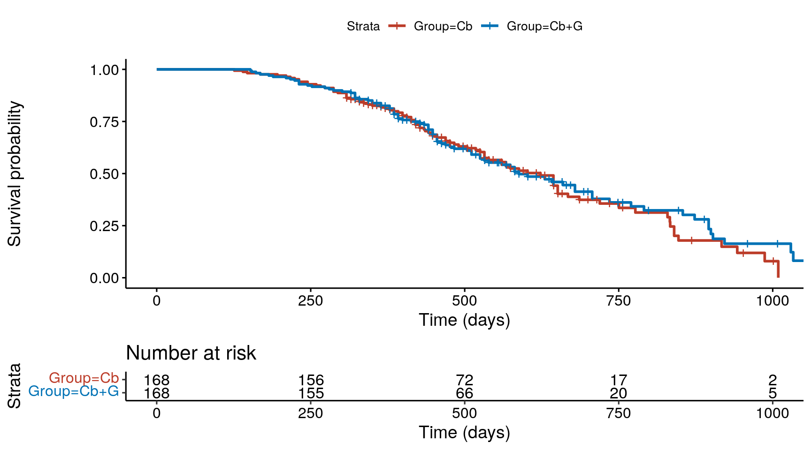
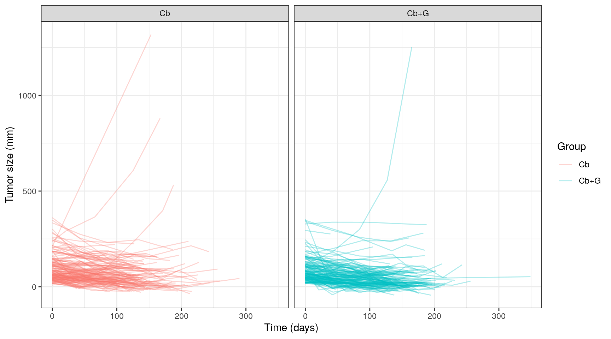
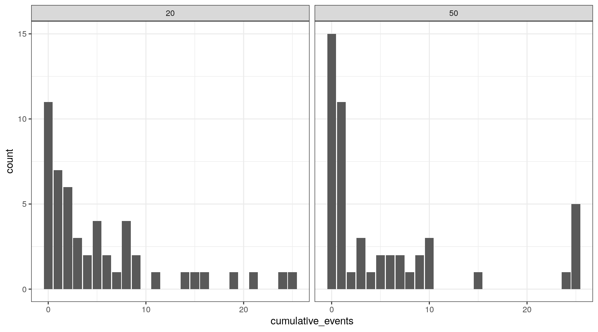
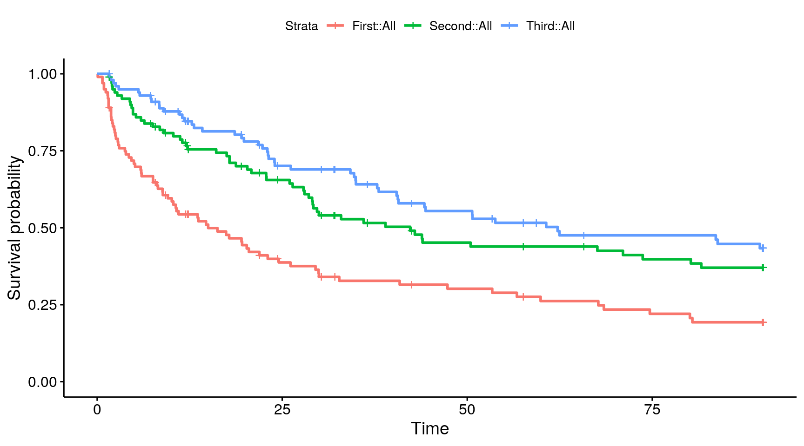

Review questions from previous weeks
Coding models which require integration
Repeated time-to-event models
The likelihood in a TTE model depends on
Thus, we need to be able to integrate the hazard function
For ‘simple’ TTE models, the hazard in integreble
As we move away from simple TTE models, we may be working with hazard functions that don’t have closed-form integrals
We will use the integrate_1d function in
Stan
Suppose we want to calculate \(H(t) = \int_a^b h(y | \theta, x_r, x_i) ~ dy\)
Inputs to integrate_1d
For example,
real cum_hazard[Nsubj];
for (i in 1:Nsubj) {
cum_haz[i] = integrate_1d(weibull_hazard, // function to integrate
0.0, // integrate from 0
event_time[i], // integrate to the event time
{ alpha, gamma, beta1, beta2 }, // parameter array
{AGE[i]}, // array of real-valued data
{ECOG[i]} // array of integer-valued data
);
}weibull_hazard functionMust follow a strict function signature and be defined in the function block in a Stan program.
real weibull_hazard(real x, // Function argument
real xc, // Complement of function argument on the domain (not used in this class)
real[] theta, // parameters
real[] x_r, // data (real)
int[] x_i) { // data (integer)
real alpha = theta[1];
real gamma = theta[2];
real beta1 = theta[3];
real beta2 = theta[4];
real hazard = (alpha/gamma) * pow(x/gamma, alpha-1) * exp(beta1*x_r[1] + beta2*x_i[1]);
return hazard;
}We’ll work through an analysis using the simulated survival data from the last class.
Models for change in tumor size, appearance of new lesions and survival probability in patients with advanced epithelial ovarian cancer [1]
Original study
We will analyze OS and the relationship between tumor changes and OS, using simulated data


\[ \frac{d}{dt} TS(t) = \left(KG_i - (KD0_{i} \cdot \overline{AUC0}_i + KD1_{i} \cdot \overline{AUC1}_i \right) TS(t) \]
where \(AUC0_i\) and \(AUC1_i\) are model-predicted time-averaged AUC values for carboplatin and gemcitabine, respectively
We’ll include effects for the model-predicted baseline tumor size and the tumor size relative to baseline (RTS).
\[ h_i(t) = \alpha / \lambda_0 \times (t / \lambda_0)^{\alpha-1} \exp(\beta_1 \times RTS(t) + \beta_2 BTS_i) \]
where \(TS_i(t)\) comes from the tumor model predictions and
\[ RTS_i(t) = \frac{TS_i(t)}{BTS_i} \]
We’ll try a few models in Workbook_time_varying.Rmd
Also known as recurrent event data
Examples
Data were simulated from a PK-RTTE model by Abrantes et. al [2]
Simulated data:
Number of events stratified by dose.

Time to first, second, and third bleeding events.

\[ h_i(t) = h_0(t) \exp(x_i \beta) \times Z_i \] where \[ Z_i \in (0,+\infty) \sim G(z ~ | ~ \omega) \]
Frailties are also used for modeling other correlations/clustering
Suppose a subject experienced events at times \(t_1\) and \(t_2\) and is event-free until \(t_3\) when she is out of the risk set
The likelihood contribution is
\[ \begin{align*} L_i(\theta) &= \int_0^\infty \left( h_i(t_1~|~Z) ~S_i(t_1~|~Z) \right) \times \left( h_i(t_2~|~Z) \frac{S_i(t_2~|~Z)}{S_i(t_1~|~Z)} \right) \times \frac{S_i(t_3~|~Z)}{S_i(t_2~|~Z)} f(Z) dZ \\ &= \int_0^\infty h_i(t_1~|~Z) \times h_i(t_2~|~Z) \times S_i(t_3~|~Z) ~ f(Z) ~ dZ \end{align*} \] Conditional on \(Z\), the log-likelihood contribution would be
\[ \begin{align*} \ell_i(\theta) &= \log h_i(t_1~|~Z) - H_i(t_1~|~Z) + \log h_i(t_2~|~Z) - \left(H_i(t_2~|~Z) - H_i(t_1~|~Z) \right) - \left( H_i(t_3~|~Z) - H_i(t_2~|~Z) \right) \\ &= \log h_i(t_1~|~Z) + \log h_i(t_2~|~Z) - H_i(t_3~|~Z) \end{align*} \]
Similar to previous modeling, but with the added random effect distribution
Prior distribution on \(\omega\)
We’ll model using log-normal distributions for \(Z\), but try using a Gamma model for homework
We’ll work through these using a workbook.